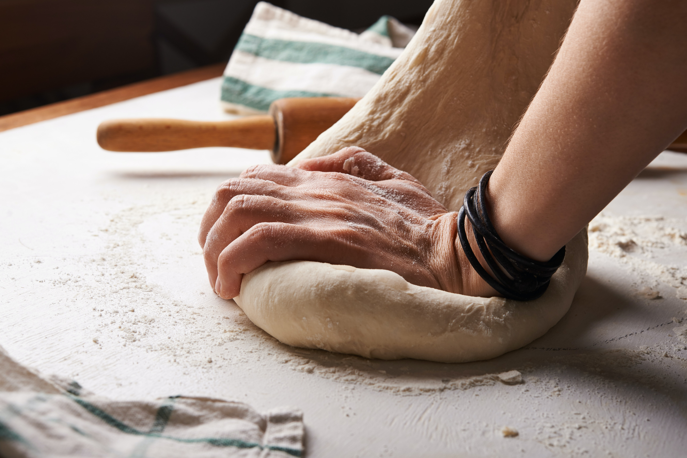

w
h
y
?
Knowing the basics of food making is important
for any college student. I have compiled some
basic bread recipes that you can follow to nourish
your body and your soul.
for any college student. I have compiled some
basic bread recipes that you can follow to nourish
your body and your soul.
What type of bread are you interested in making?
(click!)
